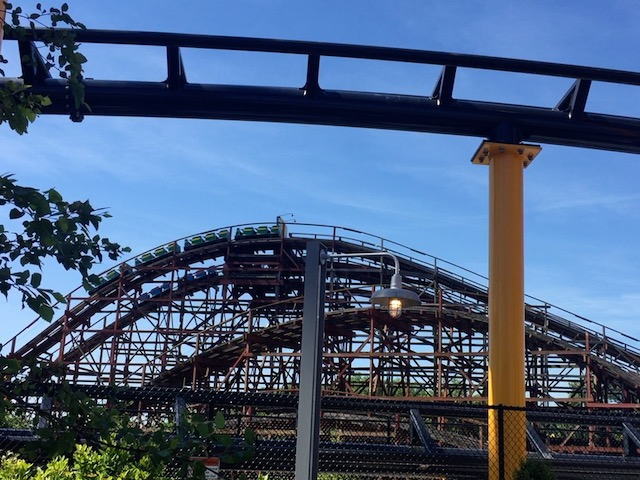
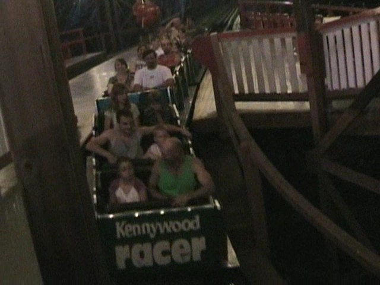

| |
Racer Review

We're here at Kennywood. Today's ride we'll be reviewing is Racer. This coaster has been at Kennywood for quite a long time and is really integrated with the park's history. But most importantly, it's fun. Anyways, after we pull down our buzz bars and buckle our seatbelts, we're off. We roll around a turn and wave hello to all the friendly people waiting in line. After that, we venture through some straight track before reaching the lift. While climbing up the lifthill, we look to our side, and off in the distance, we see them. The assholes who sat on the wrong side of Racer. The War Hungry Monkey in us wants to scream at them and declare war, but the genius inside us has a better idea. "What if we act friendly and pretend to not care, and then kick their ass when their guard is down." It's a plan that's too good to fail. As we crest the lifthill, we shout to the other side "Good luck you guys!" Then under our breath we add in "You'll need it." And then, we drop. It's not a big drop. But hey, it's still fun. Then we rise back up and head into a turnaround. During this point, we get face to face with the other side. They reach out their slimy hands. They actually want to hold hands. Staying in character, we actually manage to touch their filthy filthy hands and smile. Pretend that we're having fun while in reality, we are actually planning their humiliating defeat. As we leave the turn, we either notice that we are winning or losing. If we're winning, then excellent. The plan is working just as planned. We must keep up the good work. If we're losing, then oh crap. We're going too easy on these losers. We're giving them too much room to actually do well. We need to kick it up a notch so that we can win this thing. Then we drop. It's a fun drop, but that's not important. We're coaster racing right now. We then go into a bunny hop. There may not be any airtime, but it does give us a chance to check on our enemy. So far, no change. We're still in our original position, we're either winning or losing. Then we rise up into the second turnaround. If we were winning before, look out. The enemy is coming up on us. Looks like they figured out our strategy and are playing rough. Well if that's how they want it, we can play dirty. If we were losing before, good news. Our new aggresive approach is working like a charm. We are surging our way to victory. Either way, we still keep that smile of lies on our face, acting like we don't care. After some straight track, we break even. We're at the same place right now. This means we'll have to really kick it up in order to win this coaster race. We then dip back down. It's not that big, but it's still fun. We then head through a curved bunny hop. All the hills on this ride have a weird curve to them. Anyway, this hop, as expected, has no airtime. But is still fun. After that, we take shelter underneath the Racer Structure where we go through the final turnaround. We pretend to have a friendly competition, when in reality, we're pouring all our energy into this. If we're winning, a smile appears on our face, as we charge for victory. However, if we're losing, then we just stare in horror. We try and struggle to keep up, but we're losing. How could this be? We had a system proof plan. Is it really going to end this way? After that, we dip back down only to rise up into the brake run. The Coaster Race is over. Now if we won, we simply tell ourselves "I am such a genius for coming up with this brilliant brilliant plan. I rule." But we remain humble and don't go overboard with the cheering. If we lost, everything inside us dies. Everything that made us who we are has crumbled into a million peices and vanished into thin air. In fact, if we look closely, we now notice that we are in fact in the loser side of the station. We couldn't even get ourselves in the winners side of the station. We have to retreat to the Loser side because we're such losers. I mean think about it. If we can't even win this coaster race, how the hell can we accomplish anything in life. We keep our smile, hold back our tears, on and fake losing with dignity. But deep down, we're dead inside. Nothing matters. We may shake hands and say Good Race, but we're not speaking. There's no soul inside us. Only the empty shell of a person who once lived a life worth living, only to have it all taken away within the harshness of a coaster race. Anyways, While Racer may not have a great layout, the racing aspect is really cool and you can actually touch the other people so that's cool. Plus it's one of only 2 Mobious Racing Coasters in the World. Highly Recommended if you're at Kennywod.
7/10
Location: Kennywood
Opened: 1927
Built by: Charlie Mach
Last Ridden: June 23, 2021
Racer Photos




Home
|